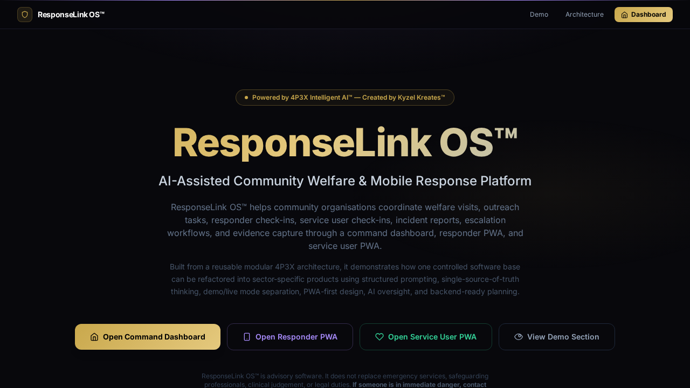

Demo Mode shows the product. Live Mode runs the product — once connected to a real backend, authentication, persistent records, and real-time sync.
What it is
ResponseLink OS™ is an AI-assisted community welfare coordination platform — designed to help organisations coordinate welfare visits, outreach operations, responder workflows, and service user check-ins from a centralised command dashboard.
Where it can be used
Charities, housing associations, outreach teams, councils, community health organisations, volunteer networks, and public-benefit operations that coordinate field workers.
Why it was built
Many welfare organisations still coordinate field operations via WhatsApp groups, paper forms, and phone calls. ResponseLink OS™ demonstrates how a structured, AI-assisted platform can replace fragmented coordination and capture evidence safely.
When it is useful
When a welfare team needs to dispatch responders, track missions, capture incident evidence, manage service user check-ins, and escalate risks — all in real time from a single dashboard.
Who it helps
Welfare coordinators, community outreach managers, housing support teams, volunteer supervisors, safeguarding officers, and frontline responders.
How it works
Features a Command Dashboard for mission assignment and oversight, a Responder PWA for field check-ins and evidence capture, and a Service User PWA for welfare check-ins and support requests.
Key features
Architecture behind it
Refactored from the 4P3X base with three-party split (command/responder/service user), welfare-sector data model, evidence capture logic, and escalation workflows.
Demo Mode to Live Mode pathway
Demo Mode shows all coordination workflows with sample missions and responders. Live Mode connects real authentication, persistent mission records, sync, and supervisor review. This is advisory software only — it does not replace emergency services, safeguarding professionals, clinical judgement, or legal duties. If someone is in immediate danger, contact emergency services.
What it can become next
Could expand to include GPS tracking, real-time mapping, safeguarding referral pathways, council reporting exports, and integration with existing case management systems.
Investor and employer relevance
Demonstrates the creator's ability to handle sensitive, safety-critical community welfare markets with appropriate disclaimer design, safeguarding awareness, and evidence-capture thinking.
⚠ Important disclaimer
ResponseLink OS™ is advisory software only. It does not replace emergency services, safeguarding professionals, clinical judgement, or legal duties. If someone is in immediate danger, contact emergency services.